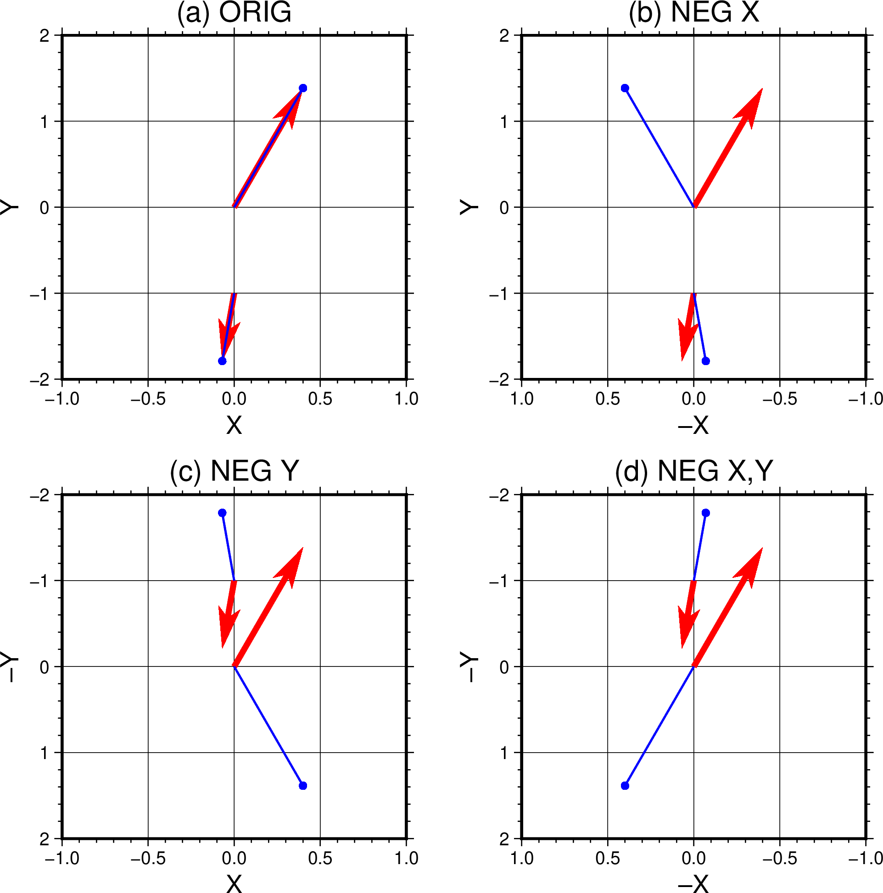

grdvector
- 官方文档:
- 简介:
根据两个网格文件绘制矢量场
语法
gmt grdvector grid1 grid2 -Jparameters [ -A ] [ -B[p|s]parameters ] [ -C[section/]master|cpt|color\(_1\),color\(_2\)[,color\(_3\),…][+h[hinge]][+idz][+u|Uunit][+sfname] ] [ -Gfill ] [ -I[x]dx[/dy] ] [ -N ] [ -Qparameters ] [ -Rregion ] [ -S[i|l]scale[+c[[slon/]slat]][+srefsize] ] [ -T ] [ -U[stamp] ] [ -V[level] ] [ -Wpen[+c] ] [ -X[a|c|f|r][xshift] ] [ -Y[a|c|f|r][yshift] ] [ -Z ] [ -fflags ] [ -lflags ] [ -pflags ] [ -ttransp ] [ --PAR=value ]
描述
该命令会读取两个 2D 网格文件并绘制矢量场。两个网格文件分别代表 \((x,y)\) 平面内矢量场的 X 分量和 Y 分量，最终矢量场用不同长度和方向的箭头表示。两个网格文件，也可以分别 是极坐标下 \((r,\theta)\) 的分量 （见 -A 和 -Z ）。
必选选项
- grid1
矢量场的 X 分量网格文件
- grid2
矢量场的 Y 分量网格文件
两个网格文件顺序很重要，对于 \((x,y)\) ，两个文件分别为 X 分量和 Y 分量。 对于 \((r,\theta)\) ，两个文件分别为大小 \(r\) 和 角度 \(\theta\) ， 其中角度可以是方向角（ -A ， 从东向逆时针测量）或方位角（ -Z ， 从北向顺时针测量）。
可选选项
- -A
输入数据为极坐标表示。即网格文件包含的是 \((r,\theta)\) 分量而不是 \((x,y)\) 分量。
- -Bparameters (more …)
设置底图边框和轴属性。
- -C[section/]master|cpt|color\(_1\),color\(_2\)[,color\(_3\),…][+h[hinge]][+idz][+u|Uunit][+sfname]
指定主 CPT 名称，CPT 文件或用逗号分割的多个颜色， 以创建一个 CPT。如果不指定参数，则在现代模式下使用当前 CPT（如果可用）。 支持以下多种输入：
主 CPT 名称，例如 earth （详见 内置CPT ）， 可使用 CPT 名称 master 或包括相对路径的 section/master 来指定（内置 CPT 不可添加 .cpt 扩展名）。
自定义 CPT 文件 cpt ，例如 my_colors.cpt 。
自动从多个颜色 color\(_1\),color\(_2\)[,color\(_3\),…] 中创建线性连续的 CPT，其中 z 值从 0 开始， 每添加一种颜色 z 值加 1。在这种情况下， color\(_i\) 可以是 r/g/b (e.g. 255/100/75)， h-s-v (e.g. 180-0.8-1)， c/m/y/k (e.g. 80/50/40/30)，HTML十六进制 (e.g. #aabbcc) 或 颜色名称。逗号之间不能有空格。
支持以下选项：
+h - 对于有软铰链 (soft hinge) 的主 CPT，可指定 hinge 值启用铰链， 而对于有硬铰链 (harde hinge) 的 CPT，可以修改铰链位置 hinge ，但不能禁用。
+i - 指定 dz 使网格 z 值范围分层，默认使用精确范围。
+s - 将创建的 CPT 保存到文件 fname。当 CPT 是自动创建时这很有用， 但必须用于 -C 的末尾。
+u - 对于任何其他主 CPT，可以通过指定其原始单位 unit 将其 z 值单位转换为米。
+U - 与 +u 类似，但是将 z 值单位从米转换为指定单位 unit 。
- -Gfill
设置矢量头填充色 fill （默认不填充）。 fill 也可通过 -Q 指定。
- -I[x]dx[/dy]
每隔 dx 和 dy 绘制一个矢量。其中 dx 和 dy 必须是 原始网格间隔的整数倍， dx 和 dy 后加上 m 表示分，加上 s 表示秒。 也可以使用 -Ixmultx[/multy] ，此时 multx 和 multy 表示倍数。 默认绘制每个节点上的矢量。
- -Jprojection (more …)
设置地图投影方式
- -N
不裁剪地图边界外的矢量（默认裁剪）。
- -Rxmin/xmax/ymin/ymax[+r][+uunit] (more …)
指定数据范围。
- -S[i|l]scale[+c[[slon/]slat]][+srefsize]
设置矢量长度的缩放比例 scale 。
对于笛卡尔数据而言，缩放比例 scale 即单位绘图距离所对应的实际数据的多少。 可以加上 c|i|p 以指定绘图单位，若不指定则使用 PROJ_LENGTH_UNIT 。 通过绘图单位缩放转换的矢量长度将绘制为直线笛卡尔矢量，其长度不受地图投影和坐标位置的影响。 例如 -S5c 表示大小为 5 的矢量在图上为 1 cm。
对于地理数据而言，缩放比例 scale 表示单位地理距离（见 距离单位 ）所对应的实际数据的多少。 矢量大小（即实际数据）被缩放到给定距离单位中的地理距离，最后投影到地球上以给出绘图距离。 这些是沿着大圆路径的地理矢量，它们的长度可能受到地图投影及坐标的影响。 例如 -S10k 表示大小为 10 的矢量在地图为 1 km。
-Siscale - 缩放比例 scale 表示单位实际数据所对应的绘图距离或地理距离。
-Sllength - 所有矢量拥有固定的绘图长度 length。
更详细的解释见 矢量缩放与单位的影响 。
使用 -V 可以报告所有绘制矢量的最小值、最大值和平均值，以及所有绘制矢量的绘制长度。 如果使用 -l 选项 自动生成图例，则需要以下一到两个子选项：
+c[[slon/]slat] - 控制地图上地理矢量的参考长度。笛卡尔矢量不可用该选项。 参考长度选择在纬度 slat 位置，也可指定经度 slon 作倾斜投影（默认为中央经线）。 如果使用 +c 但无参数，则选择地图中点的矢量长度作为参考长度。
+srefsize - 使用实际数据作为矢量的参考大小。例如，选择板块运动速率 25 mm/yr 作为参考，使用 +s25 ，对应 -l 选项 指定 -l“Velocity (25 mm/yr)”。 如果不指定 refsize ，则默认为上述的 scale 参数。
- -T
该选项意味着笛卡尔数据的方位角会根据 X 和 Y 方向符号而改变（默认不改变）。 这个选项对于坐标反向时很有用，例如 -JX5c/-2.5c ，Y 轴向下为正， 只有使用 -T 才能正确处理矢量的方位角，见下方示例。

{kind=link}
- -U[label][+c][+jjust][+odx/dy] (more …)
在图上绘制GMT时间戳logo
- -V[level] (more …)
设置 verbose 等级 [w]
- -Wpen[+c]
设置矢量轮廓的画笔属性。如果加上 +c ，则矢量头颜色和线条由 CPT 指定 （见 -C ）。
-X[a|c|f|r][xshift[u]]
- -Y[a|c|f|r][yshift[u]] (more …)
移动绘图原点
- -Z
输入的 \(\theta\) 分量数据表示方位角而不是方向信息，自动使用 -A。
- -f[i|o]colinfo (more …)
指定输入或输出列的数据类型
- -l[label][+Dpen][+Ggap][+Hheader][+L[code/]txt][+Ncols][+Ssize[/height]][+V[pen]][+ffont][+gfill][+jjust][+ooff][+ppen][+sscale][+wwidth] (more …)
为当前绘制的符号或线段增加一个自动图例记录
- -p[x|y|z]azim[/elev[/zlevel]][+wlon0/lat0[/z0]][+vx0/y0] (more …)
设置3D透视视角
- -t[transp] (more …)
设置图层透明度（百分比）。取值范围为0（不透明）到100（全透明）
- -^ 或 -
显示简短的帮助信息，包括模块简介和基本语法信息（Windows下只能使用 -）
- -+ 或 +
显示帮助信息，包括模块简介、基本语法以及模块特有选项的说明
- -? 或无参数
显示完整的帮助信息，包括模块简介、基本语法以及所有选项的说明
- --PAR=value
临时修改GMT参数的值，可重复多次使用。参数列表见 配置参数
距离单位
示例
注: 下面是该模块的一些有效语法示例。使用远程文件（文件名以 @ 开头）的示例可以剪切并粘贴到您的终端中进行测试。其他需要输入文件的命令只是常见的使用类型的虚拟示例，但不能按编写的原样运行。
对矢量长度进行缩放，使得图上1英寸代表实际的10个数据单位:
gmt grdvector r.nc theta.nc -Jx5c -A -Q0.1i+e+jc -S10i -pdf gradient
绘制地理数据，缩放比例为每个数据单位对应200 km，每隔3个网格点绘制一个矢量:
gmt grdvector comp_x.nc comp_y.nc -Ix3 -JH0/20c -Q0.1i+e+jc -S200 -pdf globe
矢量缩放与单位的影响
使用 -S 指定矢量缩放需要仔细思考，因为看起来可能有些反直觉。如 -S 中所解释的， 其指定的是每个绘图单位或地理距离单位所对应的实际数据多少。 所选择的绘图或距离单位将影响所选择的矢量类型。通常，程序会首先计算每个节点上矢量的大小 \(r\) （极坐标数据直接提取）。矢量大小可以是任何单位， 这里假设我们的网格记录地球水平磁场的长期变化，单位为 nTesla/year， 在某特定节点上，其值为 28 nTesla/year（在某个方向上）。 如果你指定缩放因子 scale 的单位为绘图单位 c|i|p 则表明你选择了 笛卡尔矢量 。 我们进一步假设你设置了 -S10c ，这表明你希望 10 nTesla/year 的数据对应绘制 1 cm 长度。在程序内部，模块会将该缩放因子转为绘图比例 1/10 = 0.1 每 nTesla/year。对于大小为 28 nTesla/year 的矢量，模块会将其乘以绘图比例， 最终得到图上 2.8 cm 长的矢量。最终不会加入实际数据单位。 如果我们希望在图例中绘制一条 10 nTesla/year 的参考矢量，则其绘制长度 10 x 0.1 = 1 cm ， 因为笛卡尔矢量缩放后的长度是恒定的，不依赖于投影和矢量位置， 即 10 nTesla/year 的矢量在图上各处均为 1 cm。
让我们将这种效果与使用地理距离单位的情况进行对比，假设使用 -S0.5k （0.5 nTesla/year 每千米），这表明你选择了 地理矢量 。 在程序内部，模块会将该缩放因子转为地图比例 2 km 每 nTesta/year。 对于大小为 28 nTesla/year 的矢量，其在地图上的长度为 28 x 2 km = 56 km。 同样，最终不会加入实际数据单位。现在，需要将这 56 km 长的矢量投影到地球上， 而由于地图投影产生的扭曲，56 km 长的矢量长度在绘图上将是地图投影、地图比例和矢量位置的函数。 例如在墨卡托地图上，赤道正东 56 公里的矢量基本等于 0.5 度经度， 但在北纬 60 度，它更像是 1 度经度。 这种影响的结果是，当用户想要在图例中添加 10 nTesla/year 的参考向量时， 就会面临该问题：绘制的长度通常取决于纬度，因此参考比例尺只在对应纬度附近有用。
也可以使用相反的设置， -Siscale 。当提供 scale 倒数更方便时，这个变式很有用。 对于笛卡尔矢量，我们可替换为 -Si0.1c 表明想绘制 0.1 cm 每 nTesta/year。 同样的，对于地理矢量，我们也可替换为 -Si2k 表明想绘制 2 km 每 nTesta/year。 随着 -Si 的参数变大，绘制的矢量也变长，而随着 -S 的参数变大，绘制的矢量变短。
注意
请注意，使用 -I 可能会导致混叠，除非网格在新的间隔上平滑变化。 通常最好对网格进行滤波，并以更大的网格间隔重新采样，再使用这些网格而不是原始网格。